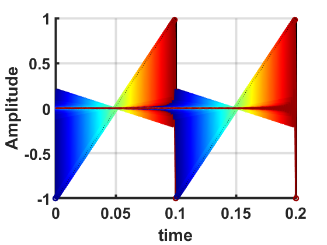
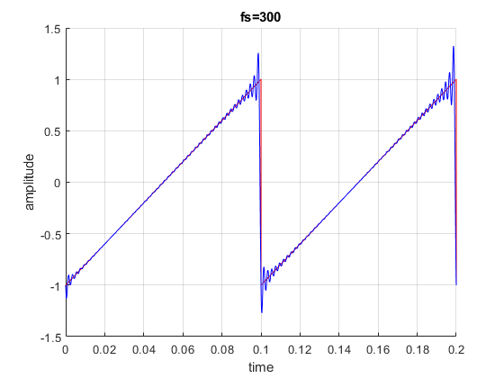

Contents
clear recent data
clear,clc,close all
part A plotting signals
f=10; t=0:1/1000:0.2; y1=sin(2*pi*f*t)+cos(4*pi*f*t); y2=sawtooth(2*pi*f*t); figure() subplot(2,1,1) plot(t,y1) xlabel('time') ylabel('amplitude') title('sin(2*pi*10*t)+cos(4*pi*10*t)') subplot(2,1,2) plot(t,y2) xlabel('time') ylabel('amplitude') title('sawtooth(2*pi*10*t)')

sampling with freqeuncy of 100HZ
fs=100; %sampling frequency in Hz tiv=1/fs; %time interval between samples; t1=0:tiv:0.2; y11=sin(2*pi*f*t1)+cos(4*pi*f*t1); y22=sawtooth(2*pi*f*t1); figure() subplot(2,1,1) stem(t1,y11) xlabel('time') ylabel('amplitude') hold on plot(t,y1) legend('sampled signal ','continuous time signal)') subplot(2,1,2) stem(t1,y22) hold on plot(t,y2); legend('sampled signal ','continuous time signal)') xlabel('time') ylabel('amplitude')
part B linear interpolation
fc = 10000; Tc = inv(fc); t = 0:Tc:0.2; y = sin(2*pi*10*t); fs = 100; Ts = inv(fs); ts = 0:Ts:0.2; ys1 = interp1(t,y,ts,"linear"); figure() plot(ts,ys1) hold on plot(t,y) xlabel('time') ylabel('amplitude') legend('interpolated signal ','continuous time signal)')
part B sinc interpolation fs=20
Create "continuous time" signal, Fc >> f
Fc = 1e6; % very high sample rate to simulate "continuous time" Tc = 1/Fc; % sampling period t = (0:Tc:0.2)'; f = 10; % signal frequency xc = sin(2*pi*f*t); % "continuous time" signal % Create sampled signal Fs = 20; % sampling rate Ts = 1/Fs; % sampling period ratio = round(Ts/Tc); tn = t(1:ratio:end); % sampled time axis xn = xc(1:ratio:end); % sampled signal % Plot the CT signal and sampled signal figure hold on grid on plot(t, xc) stem(tn, xn, 'o') legend('"Continuous time signal"', 'Sampled signal') xlabel('time') ylabel('amplitude') % Create and plot sinc train sincTrain = zeros(length(t), length(xn)); nind = 1; figure cmap = colormap(jet(length(0:floor(length(2*xn))))); ax = axes('colororder', cmap); hold on grid on plot(t, xc, 'k', 'LineWidth', 3) xlabel('time') ylabel('amplitude') for n = 0:floor(length(xn))-1 sincTrain(:, nind) = xn(nind)*sinc((t - n*Ts)/Ts); p = plot(t, sincTrain(:, nind), 'LineWidth', 2); stem(tn(nind), xn(nind), 'Color', p.Color, 'LineWidth', 2) nind = nind + 1; end xlabel('time') ylabel('amplitude') set(gca, 'FontSize', 20, 'LineWidth', 3, 'FontWeight', 'bold') xr = sum(sincTrain, 2); figure hold on grid on plot(t, xc,'r') plot(t, xr,'b') xlabel('time') ylabel('amplitude') title('fs=20')
part B sinc interpolation fs=100
Create "continuous time" signal, Fc >> f
Fc = 1e6; % very high sample rate to simulate "continuous time" Tc = 1/Fc; % sampling period t = (0:Tc:0.2)'; f = 10; % signal frequency xc = sin(2*pi*f*t); % "continuous time" signal %xc=sawtooth(2*pi*f*t); % Create sampled signal Fs = 100; % sampling rate Ts = 1/Fs; % sampling period ratio = round(Ts/Tc); tn = t(1:ratio:end); % sampled time axis xn = xc(1:ratio:end); % sampled signal % Plot the CT signal and sampled signal figure hold on grid on plot(t, xc) stem(tn, xn, 'o') legend('"Continuous time signal"', 'Sampled signal') xlabel('time') ylabel('amplitude') % Create and plot sinc train sincTrain = zeros(length(t), length(xn)); nind = 1; figure cmap = colormap(jet(length(0:floor(length(2*xn))))); ax = axes('colororder', cmap); hold on grid on plot(t, xc, 'k', 'LineWidth', 3) xlabel('time') ylabel('amplitude') for n = 0:floor(length(xn))-1 sincTrain(:, nind) = xn(nind)*sinc((t - n*Ts)/Ts); p = plot(t, sincTrain(:, nind), 'LineWidth', 2); stem(tn(nind), xn(nind), 'Color', p.Color, 'LineWidth', 2) nind = nind + 1; end xlabel('time') ylabel('Amplitude') set(gca, 'FontSize', 20, 'LineWidth', 3, 'FontWeight', 'bold') xr = sum(sincTrain, 2); figure hold on grid on plot(t, xc,'r') plot(t, xr,'b') xlabel('time') ylabel('amplitude') title('fs=100')
part B sinc interpolation fs=300
Create "continuous time" signal, Fc >> f
Fc = 1e6; % very high sample rate to simulate "continuous time" Tc = 1/Fc; % sampling period t = (0:Tc:0.2)'; f = 10; % signal frequency xc = sin(2*pi*f*t); % "continuous time" signal %xc=sawtooth(2*pi*f*t); % Create sampled signal Fs = 300; % sampling rate Ts = 1/Fs; % sampling period ratio = round(Ts/Tc); tn = t(1:ratio:end); % sampled time axis xn = xc(1:ratio:end); % sampled signal % Plot the CT signal and sampled signal figure hold on grid on plot(t, xc) stem(tn, xn, 'o') legend('"Continuous time signal"', 'Sampled signal') xlabel('time') ylabel('amplitude') % Create and plot sinc train sincTrain = zeros(length(t), length(xn)); nind = 1; figure cmap = colormap(jet(length(0:floor(length(2*xn))))); ax = axes('colororder', cmap); hold on grid on plot(t, xc, 'k', 'LineWidth', 3) xlabel('time') ylabel('amplitude') for n = 0:floor(length(xn))-1 sincTrain(:, nind) = xn(nind)*sinc((t - n*Ts)/Ts); p = plot(t, sincTrain(:, nind), 'LineWidth', 2); stem(tn(nind), xn(nind), 'Color', p.Color, 'LineWidth', 2) nind = nind + 1; end xlabel('time') ylabel('Amplitude') set(gca, 'FontSize', 20, 'LineWidth', 3, 'FontWeight', 'bold') xr = sum(sincTrain, 2); figure hold on grid on plot(t, xc,'r') plot(t, xr,'b') xlabel('time') ylabel('amplitude') title('fs=300')

part B sinc interpolation fs=300 for sawtooth signal
Fc = 1e6; Tc = 1/Fc; t = (0:Tc:0.2)'; f = 10; xc=sawtooth(2*pi*f*t); % Create sampled signal Fs = 1000; % sampling rate Ts = 1/Fs; % sampling period ratio = round(Ts/Tc); tn = t(1:ratio:end); % sampled time axis xn = xc(1:ratio:end); % sampled signal % Plot the CT signal and sampled signal figure hold on grid on plot(t, xc) stem(tn, xn, 'o') legend('"Continuous time signal"', 'Sampled signal') xlabel('time') ylabel('amplitude') % Create and plot sinc train sincTrain = zeros(length(t), length(xn)); nind = 1; figure cmap = colormap(jet(length(0:floor(length(2*xn))))); ax = axes('colororder', cmap); hold on grid on plot(t, xc, 'k', 'LineWidth', 3) xlabel('time') ylabel('amplitude') for n = 0:floor(length(xn))-1 sincTrain(:, nind) = xn(nind)*sinc((t - n*Ts)/Ts); p = plot(t, sincTrain(:, nind), 'LineWidth', 2); stem(tn(nind), xn(nind), 'Color', p.Color, 'LineWidth', 2) nind = nind + 1; end xlabel('time') ylabel('Amplitude') set(gca, 'FontSize', 20, 'LineWidth', 3, 'FontWeight', 'bold') xr = sum(sincTrain, 2); figure hold on grid on plot(t, xc,'r') plot(t, xr,'b') xlabel('time') ylabel('amplitude') title('fs=300') 